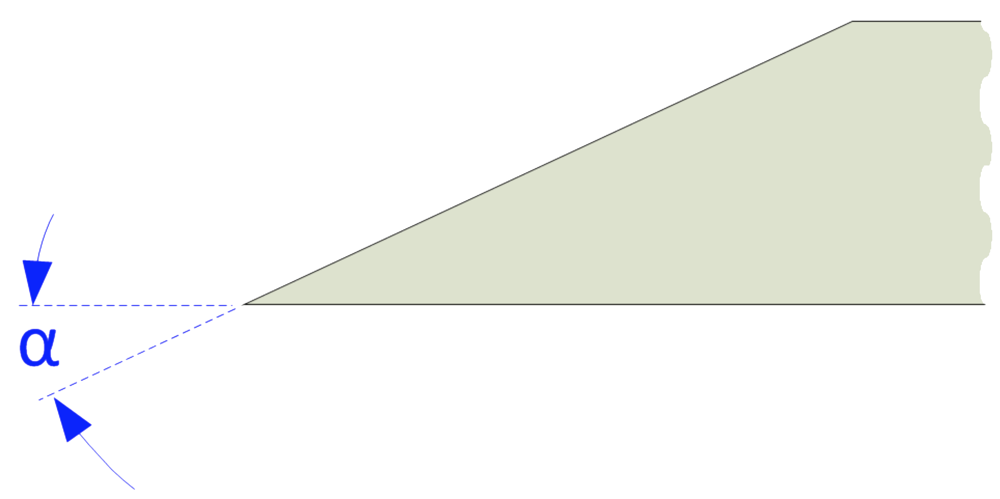
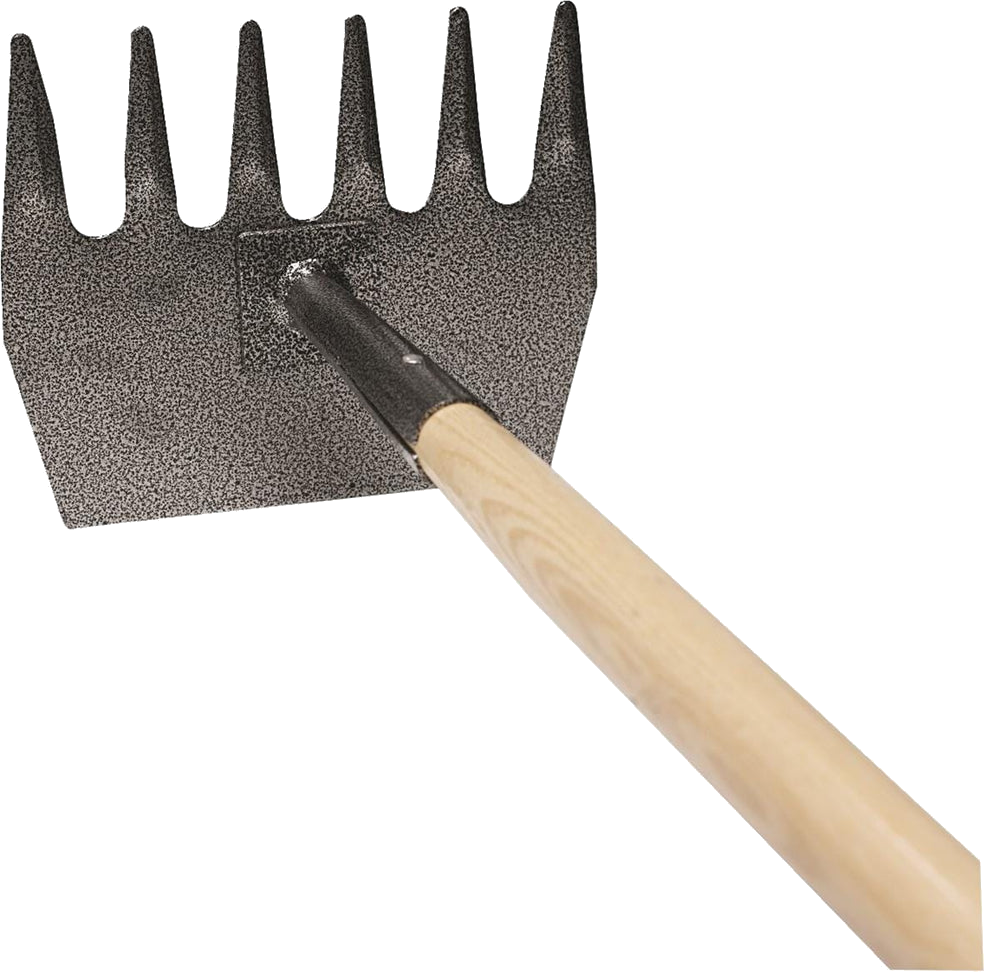

|
|
|
McLeod Tools |

Edge Angle

McLeod tool
This tool is used in firefighting for cleaning up burnt areas. Parks Service use this tool for clearing up areas for hiking trails.
Guidelines shown below are for Included Angles (α).
A 6" smooth cut machinist’s hand file is useful to carry with you. Use it with a draw filing approach to resharpen the shovel as needed throughout the tool's usage for the day.
All men are created equal, then a few become firemen.
Anonymous
If this tool is used for landscaping, the directions below for tool maintenance are especially important to ensure the longest tool life.
Thank you to Craig “Rooster” Roost of Council Tool in compiling the information for this.
The shape of the grind used is a call best made by the tool's use, based on your own experience. Additional notes are available on separate web pages for Grind Profiles, and Micro / Secondary Bevels.